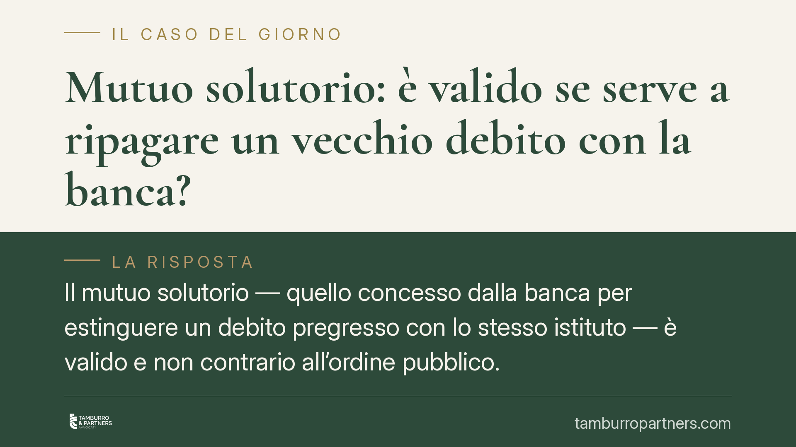

Mutuo solutorio: è valido se serve a ripagare un vecchio debito con la banca?
Il mutuo solutorio — quello concesso dalla banca per estinguere un debito pregresso con lo stesso istituto — è valido e non contrario all'ordine pubblico. Lo conferma la Corte d'Appello di Catania (sent. n. 733/2026), salvo i casi di frode ai creditori. Un chiarimento utile per chi affronta una rinegoziazione del proprio esposto bancario.

Il caso
Un mutuo erogato non per acquistare o ristrutturare un immobile, ma per ripagare un debito già esistente verso la stessa banca che eroga il finanziamento. È il cosiddetto mutuo solutorio (dal latino *solutio*, pagamento): lo scopo non è procurare nuova liquidità al cliente, ma riorganizzare un'esposizione già in essere, spesso spalmandola su un piano di rimborso più lungo e sostenibile.
La domanda ricorrente è se un'operazione di questo tipo sia valida, oppure se possa essere contestata perché, in fondo, nessun denaro "nuovo" entra nelle tasche del mutuatario. La Corte d'Appello di Catania, con la sentenza n. 733/2026, ha risposto confermando la validità del mutuo solutorio, nei limiti che vediamo.
Inquadramento normativo
Il nodo tradizionale riguardava la natura del mutuo. Il contratto di mutuo è disciplinato dagli artt. 1813 e seguenti del Codice civile ed è stato a lungo considerato un contratto reale, cioè perfezionato solo con la consegna materiale della somma (la *traditio*). Se il denaro non passa fisicamente al cliente ma viene usato per estinguere un debito preesistente, ci si chiedeva se vi fosse davvero un mutuo.
L'orientamento consolidato delle Sezioni Unite della Cassazione ha superato questa impostazione: la *traditio* può essere sostituita dalla disponibilità giuridica della somma. In altri termini, basta che la somma sia messa a disposizione del mutuatario — anche solo contabilmente, per poi essere girata a estinzione del debito pregresso — perché il contratto sia perfezionato e valido. L'operazione produce un effetto giuridico reale: estingue il vecchio rapporto e ne costituisce uno nuovo.
Validità del contratto e aggredibilità dell'operazione
Qui sta il punto che spesso genera confusione. Una cosa è la validità del contratto, altra è la sua opponibilità ai terzi. Il mutuo solutorio è valido tra banca e cliente; ciò non significa che l'operazione sia al riparo da ogni contestazione da parte dei creditori del mutuatario.
Se l'operazione viene costruita per sottrarre garanzie agli altri creditori — per esempio trasformando un credito chirografario (non garantito) in un credito ipotecario a favore della banca, a danno di chi resta indietro — può essere aggredita.
Fuori da procedure concorsuali, lo strumento è l'azione revocatoria ordinaria (art. 2901 c.c.), con cui il creditore pregiudicato fa dichiarare inefficace nei suoi confronti l'atto che lede le sue ragioni. Se il mutuatario è un'impresa assoggettata a liquidazione giudiziale, entrano in gioco invece le azioni revocatorie concorsuali disciplinate dagli artt. 163 e seguenti del Codice della crisi d'impresa e dell'insolvenza (D.Lgs. 14/2019), che hanno presupposti e termini propri.
La Corte di Catania, nel confermare la validità del mutuo, richiama proprio questa linea di confine: il contratto regge, ma l'operazione può cadere se si traduce in frode ai creditori o presenta anomalie nel pagamento (ad esempio accrediti figurativi privi di reale movimentazione).
Implicazioni pratiche
Per chi rinegozia un'esposizione bancaria, il messaggio è duplice. Da un lato, non va temuta l'invalidità del mutuo solutorio in quanto tale: è uno strumento legittimo di ristrutturazione del debito. Dall'altro, l'operazione va costruita con attenzione, soprattutto quando il debitore ha altri creditori o si trova in difficoltà finanziaria. In quel contesto, ciò che è valido può comunque essere inefficace verso i terzi.
Per la banca, la pronuncia conferma la solidità di una prassi diffusa. Per il cliente, è un invito a valutare l'operazione non solo dal lato del rapporto con l'istituto, ma anche rispetto all'intera posizione debitoria.
Cosa fare in concreto
- Verificate la causa dell'operazione: fatevi chiarire per iscritto se il nuovo mutuo serve a estinguere un debito pregresso e con quali modalità contabili.
- Controllate le garanzie: accertate se il mutuo introduce ipoteche o garanzie nuove rispetto al debito originario, e valutatene l'impatto.
- Fotografate la situazione debitoria complessiva: se esistono altri creditori, considerate il rischio di future contestazioni dell'operazione.
- Conservate le evidenze dei movimenti: estratti conto e contabili servono a dimostrare la reale messa a disposizione della somma.
- Fatevi assistere prima della firma, non dopo: la distinzione tra atto valido e atto revocabile si gioca sui dettagli dell'operazione.
Ogni contratto ha il suo equilibrio.
Se vuoi una revisione delle clausole o una redazione su misura, scrivi allo studio. Ti rispondiamo entro un giorno lavorativo.